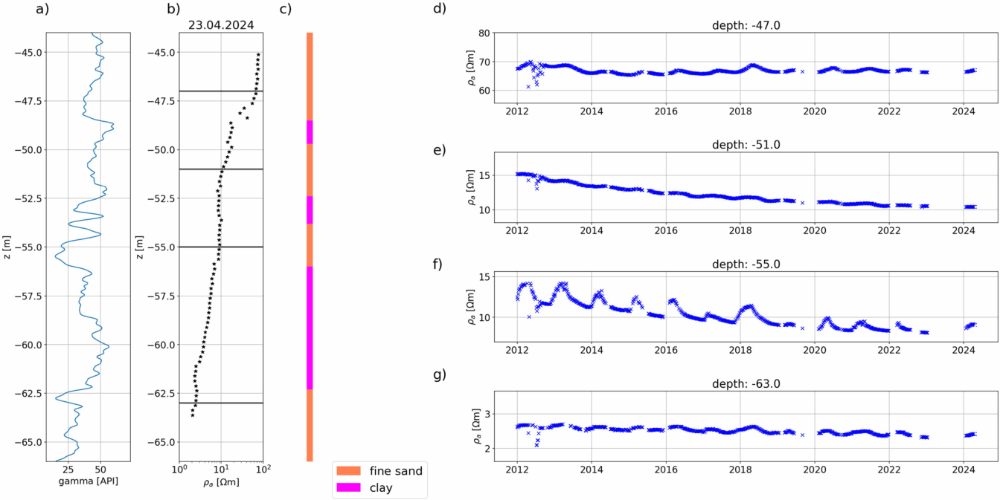
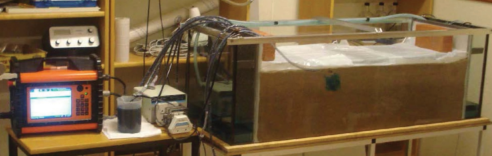
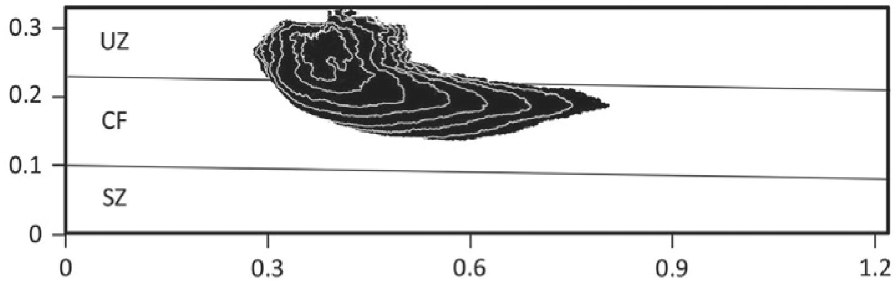
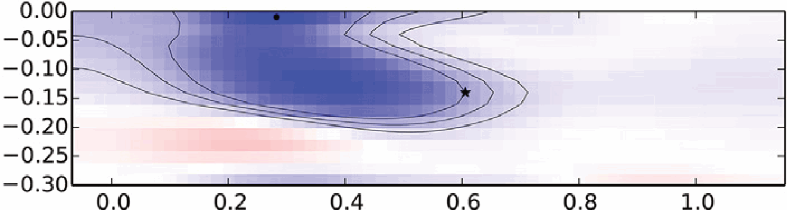
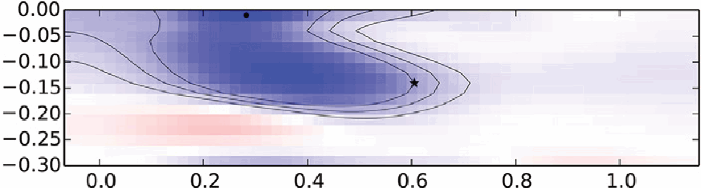
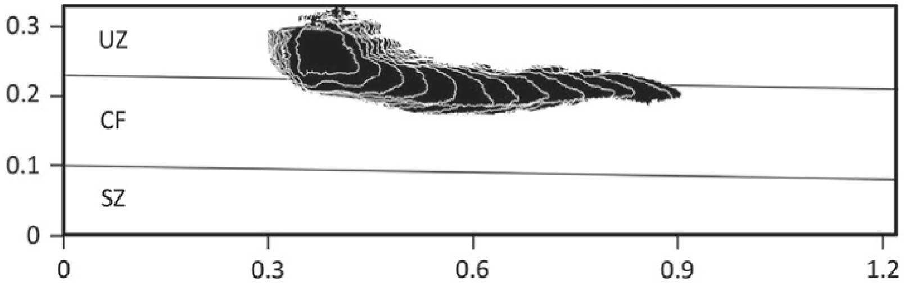
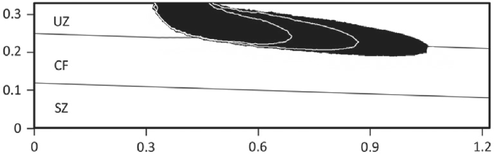
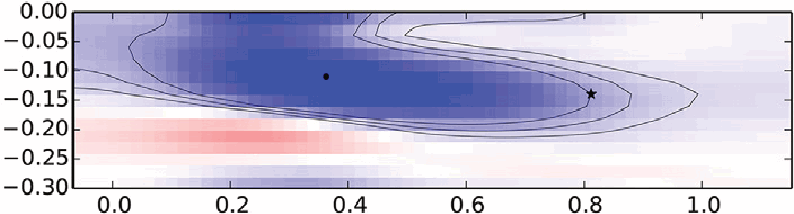

6 Geoelektrisches Monitoring
7 Timelapse ERT - Geoelektrik-Monitoring
- Ziel: Verfolgung von ablaufenden Prozessen
- meist mit fest verbauten Elektroden(ketten)
- günstiges und schnelles Verfahren, automatisierbar
- Ziele: Infiltration, Schadstoffausbreitung, Wärmespeicher, …
- Fokus auf Veränderungen (Fluid-LF, Sättigung, )
7.0.1 Salzwasser-Monitoring-System SAMOS

7.1 Timelapse-ERT
- Synthetisches Experiment: Example
- Auswertestrategien: Example
7.2 Stofftransport in der ungesättigten Zone

7.3 Transport ungesättigt (Persson u. a. 2015)
  

  
7.4 3D-Crosshole ERT-Monitoring

7.4.1 Data Timeline
xh = ert.CrossholeERT('heat-data.shm')
self.filter(tmax=80) # cut late frames
self.filter(t=4) # remove single frame
self.mask(rmin=10, rmax=1000, emax=0.2)
c04 = self.extractSubset(1)
d01 = self.extractSubset(5)
d06 = self.extractSubset(6)
d09 = self.extractSubset(7)
# plotting
ax = c04.showTimeline(a=14, m=13, n=12,
b=11, label="C04")
d01.showTimeline(ax=ax, a=14, m=12, n=10,
b=8, label="D01");
d06.showTimeline(ax=ax, a=8, m=7, n=6,
b=5, label="D06");
d09.showTimeline(ax=ax, a=3, m=2, n=1,
b=0, label="D09");
7.4.2 2D Inversion of selected time steps
xh.filter(select=['2021-08-10',
'2021-08-20', '2021-08-27',
'2021-09-09', '2021-09-21'])
x15 = xh.extractSubset([1, 5])
x15.mask(rmin=10, rmax=1000, emax=0.2)
reg = {"correlationLengths": [3, 2],
limits=[20, 500]}
x15.invert(t=3, reg=reg)
x15.fullInversion(reg=reg) # 4D invGeostatistical regularization (Jordi et al. 2018)

7.4.3 Transformation of ratio into temperature


7.5 3D inversion result